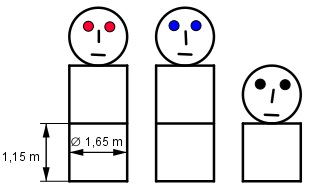

Aufgabe 133 Kinder haben diese Figuren aus Strohballen gleicher Größe hergestellt. Wie groß ist deren Gesamtgewicht m, wenn die Dichte von Stroh 0,12 kg/dm3 beträgt? Wie viel m2 Folie braucht man, um die Ballen einzupacken?

Volumen eines zylindrischen Ballens: r = d/2 = 1,65 m/2 = 0,825 m VBallen = G * h G = п * r2 = п * 0,8252 m2 = 2,14 m2 VBallen = 2,14 m2 * 1,15 m = 2,46 m3 Es sind 8 Ballen: V = 8 * VBallen = 8 * 2,46 m3 = 19,7 m3 m = V * р р = 0,12 kg/dm3 = 0,12 t/m3 m = 19,7 m3 * 0,12 t/m3 = 2,36 t Bedarf an Folie B = 8 * Oberfläche O O = 2 * G + 2 * п * r * h O = 2 * 2,14 m2 + 2 * п * 0,825 m * 1,15 m O = 4,28 m2 + 5,96 m2 = 10,24 m2 B = 8 * 10,24 m2 = 81,9 m2